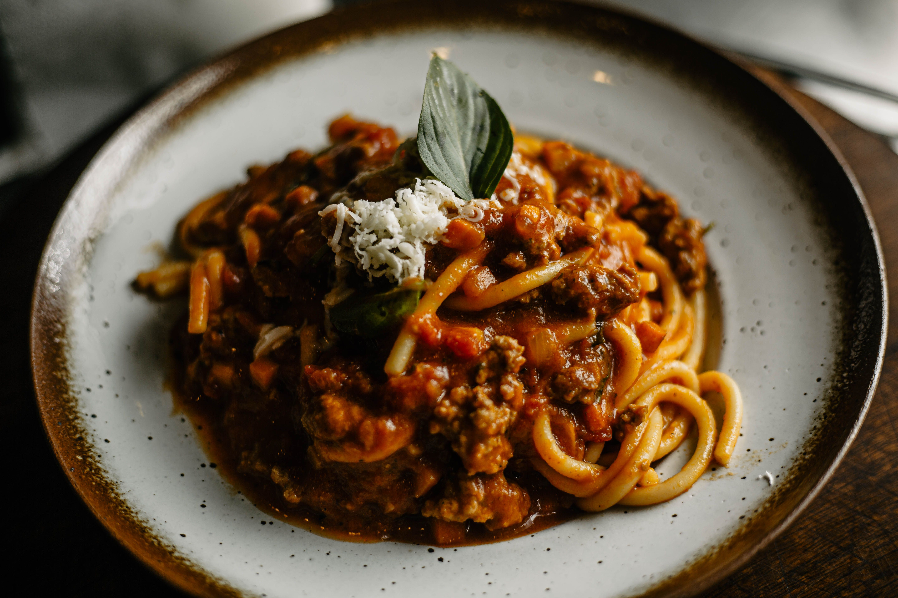

Veggie Spag Bol
This is a home-made Spag Bol recipes designed for vegetarians in mind but could have the veggie mince swapped for meat.
You could also change the mince for meat balls.

Ingredients:
- 1 onion, finely chopped
- 1/2 a pepper
- 1 pack of mince
- 2 tins of chopped tomatoes
- 1 tin of kidney beans (drained)
- 2 tablespoons of Italian Seasoning
- 1 clove of garlic
- 1 handfull of lentils (optional)
- 1 squeeze of Tomato Puree (optional)
- 1 OXO cube for extra flavour
- Spaghetti
Steps:
- Heat oil in a pan then chop and add onion and fry until translucent
- Chop and add the pepper and garlic, fry for 3/4 mins
- Add Italian Seasoning (or a combo of basil, oregano & thyme)
- Add the tinned tomoatoes, then the Kidney Beans and then the mince
- Optional, add a handful of lentils, a squeeze of Tomato Puree and 1 OXO cube
- Simmer for 15-20 minutes
- Cook Spaghetti and serve
Home